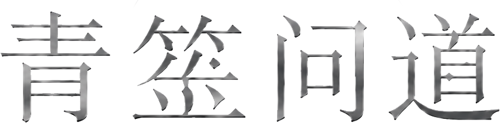

筮
QING SHI WEN DAO

玄门日课 · 今日宜静观
见天地，见自己
以古籍为根，以历法为尺。每一次推演，都保留清晰的时间口径与判断依据。
公历农历
核心排盘
全部工具最近使用
档案管理筮记一言
“先观月令，论格推详。”
神煞只作旁证，格局、气势、调候与岁运仍是判断主线。
神煞只作旁证，格局、气势、调候与岁运仍是判断主线。
QING SHI WEN DAO

玄门日课 · 今日宜静观
以古籍为根，以历法为尺。每一次推演，都保留清晰的时间口径与判断依据。